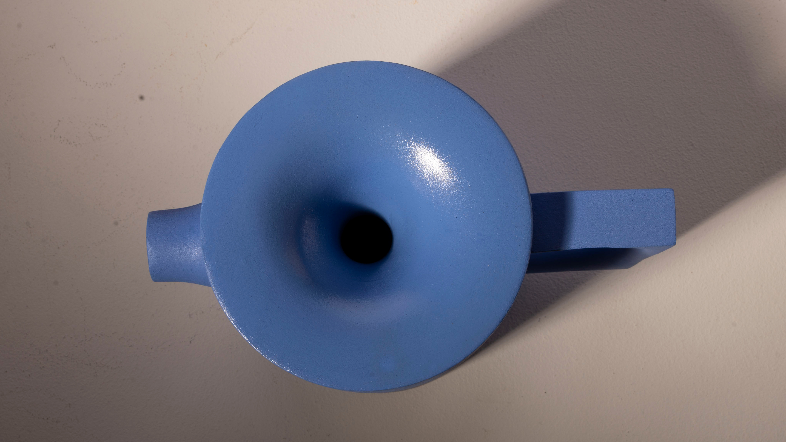

Dragsug
Inspirasjon til denne kaffekannen er hentet fra Ole Palsby sin kaffekanne. Det er ønsket et figurativt uttrykk hvor det er tydelige seperasjon mellom inntak, utløp og håndtak. Blåfargen tilfører kaffekannen mykere og vennligere karakter.
